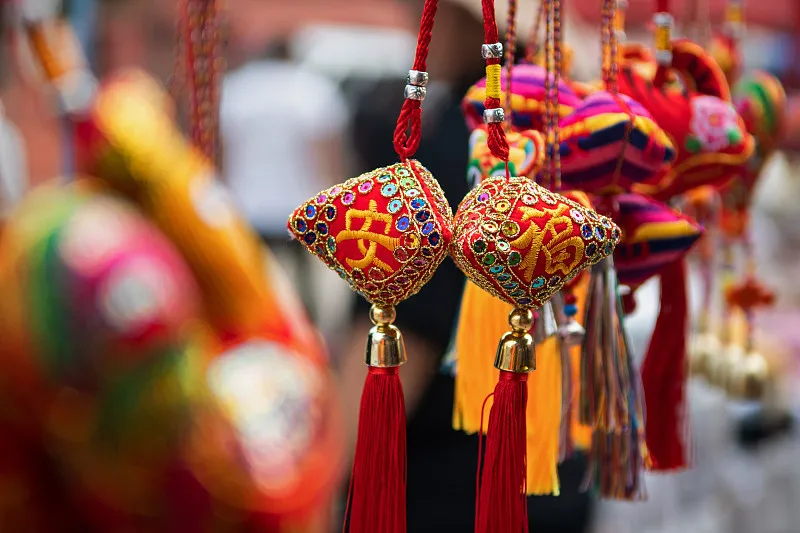

端午节
———龙舟竞渡卫家邦
历史脉络
端午节雏形为先秦夏至驱疫仪式，《荆楚岁时记》载“五月五日，四民并蹋百草”。汉代注入纪念屈原元素，《史记》载楚人划舟救溺演变出龙舟竞渡。唐代出现五色丝缠粽，宋代《梦粱录》记录临安府“家家买桃柳葵榴蒲艾”的盛况。2009年端午节成为首个入选世界非遗的中国传统节日。
风俗全景：
龙舟破浪：
广州国际龙舟赛设传统龙、标准龙两类，顺德“龙舟漂移”需25人急转90度；
粽叶飘香：
嘉兴“枕头粽”用7张箬叶包裹，黄山“灰汤粽”以草木灰水浸泡；
佩艾悬菖：
江西抚州端午草药浴含艾叶、佩兰等12味药材；
雄黄画额：
福建漳州给孩童画“王”字驱毒，伴以《白蛇传》皮影戏演出。
文化内核
节日浓缩古代防疫智慧，《夏小正》载“此日蓄药，以蠲除毒气”。湖北秭归“屈原故里端午习俗”包含祭江、吟诵等40余项流程，韩国江陵端午祭仍保留菖蒲水洗头传统，印证文化传播轨迹。
当代创新
国际划联将龙舟列为正式比赛项目，2023年亚运会龙舟赛道设电子感应标尺；故宫文创推出“天禄艾草香囊”，内藏《本草纲目》驱蚊配方。浙江湖州开发“数字龙舟”元宇宙，用户可穿戴VR设备体验湘楚水战。
